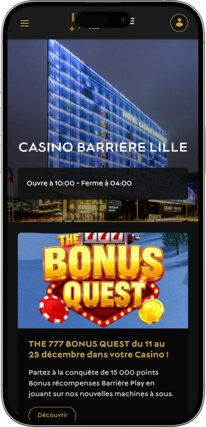

Offre de bienvenue exclusive de
Offre de bienvenue exclusive de
Casino Barrière Lille — machines, roulette, poker, spectacles et restaurants
Top casinos
Détails du bonus
Casino
Bonus
Note
Tours gratuits
Plus d'infos
Obtenir
Avantages
-
Plus de 300 machines, jackpots fréquents
-
Roulette et blackjack en tables live
-
Poker Texas Hold’em et tournois réguliers
-
Jeux électroniques au rythme rapide
-
Spectacles et soirées sur place
-
Plusieurs bars pour faire une pause
-
Emplacement pratique et grand parking
- Le Casino Barrière Lille séduit par l’équilibre entre variété de jeux et divertissement. On peut y vivre une soirée complète : casino, bar, restaurant et spectacle au même endroit. L’ambiance est moderne, animée et confortable pour tous les profils de visiteurs.
Casino Barrière Lille App


À propos Casino Barrière Lille
Le Casino Barrière Lille se distingue par l’ampleur de son offre et des animations orientées “gros gains”. Son autre force : l’expérience complète avec spectacles, bars et restauration pour prolonger la soirée au-delà du jeu.
- Jackpots jusqu’à 25 000€+.
- Machines : gain 10 000€+ possible.
- Tournois : prix 5 000€+.
Le Casino Barrière Lille est un casino moderne au format urbain. Il permet de combiner jeu, détente et sorties au sein d’un même complexe. Les espaces de jeu sont conçus pour une circulation fluide et un choix simple du rythme.
L’offre couvre machines, tables classiques et formats poker. L’ambiance mélange l’énergie du casino et des zones plus calmes pour souffler. Des bars sur place permettent de faire une pause entre deux sessions. Les restaurants complètent l’expérience, du dîner au snack. Un point fort réside dans la programmation de divertissements et d’événements. Les habitués profitent d’avantages et d’offres dédiées. Au final, c’est une destination idéale pour une soirée mêlant jeu, gastronomie et spectacle.
Casino Barrière Lille : une soirée stylée entre jeu et spectacle
Le Casino Barrière Lille se vit comme un casino urbain contemporain, avec une atmosphère vive et immersive. Le décor mise généralement sur la lumière, les volumes et une signature visuelle moderne qui renforce l’esprit “sortie”. En parallèle, on retrouve des espaces plus posés pour ralentir le rythme et reprendre son confort. Cet équilibre convient autant à une visite courte qu’à une longue soirée rythmée par plusieurs pauses. Pour un site, c’est un point clé : on comprend que l’expérience ne se limite pas au jeu.
Les horaires sont pensés pour les plans du soir : le casino ouvre chaque jour et reste accessible jusque tard dans la nuit. On peut venir en journée pour une session tranquille ou choisir la fin de soirée pour profiter d’une ambiance plus intense. Aux heures d’affluence, l’énergie est plus festive, tandis que les créneaux calmes sont idéaux pour s’initier. Cette amplitude horaire permet d’adapter sa visite à son style de jeu. Les visiteurs orientés “ambiance” privilégient souvent la soirée.
L’offre de bars s’organise autour de plusieurs scénarios de détente. On trouve un esprit lounge pour cocktails et échanges, un bar sportif pour suivre les matchs avec une restauration légère, et des espaces plus proches des salles de jeu. Cela permet de changer d’humeur sans quitter le complexe : apéritif, pause, retour au jeu, puis fin de soirée. Les bars structurent la soirée en séquences naturelles, ce qui améliore l’expérience globale. On vient autant pour l’atmosphère que pour les tables.
La présence d’un hôtel dans le même ensemble renforce le format “tout‑en‑un” : dormir sur place évite de gérer un retour tardif. C’est particulièrement appréciable lors des grands spectacles, des week‑ends et des temps forts saisonniers. La programmation événementielle, concerts, humour, soirées thématiques et rendez‑vous spéciaux, ajoute une vraie valeur même aux non‑joueurs. Le casino devient alors un lieu de sortie complet, pas seulement une salle de jeu. Côté visibilité, cela élargit fortement le public cible.
Enfin, les mécaniques bonus et la fidélité donnent une dimension “cumulable” aux visites. Les offres personnalisées, les statuts et les privilèges sur les services du complexe encouragent le retour. Les animations autour des machines et les formules “dîner + spectacle” complètent souvent l’expérience. L’ensemble crée une impression premium, tout en restant simple d’accès. Le Casino Barrière Lille se décrit parfaitement comme une destination où le jeu s’intègre dans une soirée plus large.
Service et argent au Casino Barrière Lille : équipe, paiements et gains
Le personnel du Casino Barrière Lille s’inscrit généralement dans un standard “hôtellerie‑loisirs” : accueil poli, rythme efficace et attention au confort. À l’entrée comme en salle, les équipes orientent, expliquent les règles essentielles et aident volontiers les nouveaux visiteurs. Même lors des périodes d’affluence, l’organisation reste structurée grâce à des points de service et une répartition claire des rôles. Pour les joueurs, cela réduit le stress et améliore la qualité de la soirée. Les espaces premium, lorsqu’ils sont proposés, offrent souvent un accompagnement plus personnalisé.
Côté langues, le français et l’anglais sont les plus courants, avec une capacité d’aide multilingue “de base” plus fréquente en période touristique. Même avec un niveau limité, les démarches clés — accès, change en jetons/crédits, questions de paiement — se gèrent sans difficulté dans la plupart des cas. La signalétique et l’organisation des zones rendent l’expérience assez intuitive. Avant de miser, il est aussi possible de clarifier des points de jeu auprès du personnel ou du croupier. Cela renforce la sensation de sécurité pour les débutants.
La monnaie de référence est l’euro, et l’expérience financière combine généralement espèces et solutions bancaires. Les opérations suivent un schéma simple : transformation de l’argent en format de jeu (jetons, tickets, crédits), puis retour en caisse pour le règlement final. Cette logique évite les confusions et maintient une séparation claire entre jeu et budget. Pour mieux gérer sa soirée, il est conseillé de définir un plafond de dépenses à l’avance. Cette discipline améliore l’expérience et limite les excès.
Les moyens de paiement incluent le plus souvent espèces et cartes, avec des variantes selon les règles internes et les exigences de conformité. Certaines opérations peuvent être encadrées, et les montants élevés peuvent déclencher des vérifications supplémentaires. Des distributeurs sont fréquemment disponibles sur place ou à proximité, et des services de change existent souvent dans l’environnement urbain alentour. Le scénario le plus pratique consiste à combiner une part en espèces et une part sur carte. Vous gardez ainsi de la flexibilité tout au long de la soirée.
Le retrait des gains se fait généralement en caisse : échange des tickets/crédits ou des jetons contre de l’argent, avec présentation d’une pièce d’identité possible en cas de montant important. C’est une pratique standard liée à la sécurité et aux obligations de prévention des risques financiers. Concernant la fiscalité, pour un visiteur particulier, les gains ne font généralement pas l’objet d’une retenue fiscale immédiate sur place, mais des nuances peuvent exister selon votre statut et votre résidence fiscale. En cas de gains élevés, conserver un justificatif est une bonne pratique. Cela rend la partie financière plus sereine et plus claire.
Règles de visite du Casino Barrière Lille : accès, tenue et transport
La visite du Casino Barrière Lille commence par un contrôle d’âge et d’identité, donc une pièce valide est indispensable. L’accès est réservé aux majeurs et aux personnes non interdites de jeu. L’établissement privilégie une apparence soignée, souvent sans rigidité excessive : l’essentiel est d’être correct. Une tenue trop sportive peut être moins adaptée, surtout le soir et près des tables. À l’intérieur, le respect des règles de conduite est important : calme, courtoisie et suivi des consignes du personnel. Les photos et vidéos peuvent être encadrées pour préserver la confidentialité des joueurs. La politique de jeu responsable est mise en avant, avec possibilité d’être orienté en cas de besoin. Des zones fumeurs sont généralement prévues pour maintenir le confort des autres visiteurs. Pour les spectacles, des règles spécifiques s’appliquent selon les billets et les horaires d’entrée. En groupe, mieux vaut anticiper l’arrivée pour éviter la précipitation au contrôle. L’emplacement se prête aussi bien au taxi qu’aux transports. Les automobilistes apprécient la présence d’un grand parking.
- • Tenue (dress code) : casual soigné ou smart casual ; le soir, une tenue plus élégante est recommandée près des tables.
- • Conditions d’accès : 18+ ; pièce d’identité obligatoire ; contrôles possibles pour certaines zones ou opérations importantes.
- • Interdictions : entrée refusée en cas d’ivresse manifeste ; comportements perturbateurs interdits ; règles de prise d’images variables selon les espaces.
- • Comportement en salle : respecter l’espace autour des tables, ne pas gêner la circulation, suivre les décisions du croupier.
- • Parking : grand parking pratique ; en période d’affluence, arriver en avance améliore le confort.
- • Accès : métro/taxi/à pied selon votre point de départ ; le taxi reste souvent la solution la plus simple tard le soir.
Le Carré VIP au Casino Barrière Lille : fonctionnement, statuts et bonus
Le programme Le Carré VIP au Casino Barrière Lille s’adresse à ceux qui aiment revenir et valoriser chaque visite. L’idée est simple : une partie de votre activité se transforme en points, en statuts et en offres personnalisées. Les points sont souvent liés au jeu sur machines via la carte, ainsi qu’à certaines opérations ou services, selon les règles en vigueur. Plus votre statut monte, plus les avantages deviennent visibles : accès facilité, bonus plus intéressants, attentions et invitations. Pour un nouveau visiteur, le programme apporte rapidement un “plus” à l’expérience. Pour un habitué, la valeur est dans la personnalisation et la régularité des offres. On peut aussi profiter d’animations privées et de priorités sur certains rendez‑vous. Le statut s’inscrit généralement dans une logique de période et d’activité, encourageant la fidélité. Certaines offres sont saisonnières et limitées dans le temps. La meilleure stratégie consiste à s’inscrire dès le départ et à utiliser la carte à chaque session.
Conditions d’inscription
- • Âge : 18+ et non interdit de jeu.
- • Documents : pièce d’identité valide.
- • Où s’inscrire : accueil/caisses ou point fidélité.
- • Durée : souvent 3 à 10 minutes.
- • Activation : immédiate, cumul possible le jour même.
Statuts Le Carré VIP et comment les obtenir
- • Blanc (Départ) : inscription + première activité ; pas de seuil pour commencer.
- • Argent : seuil indicatif 1 000 points sur une période ; accès et offres renforcés.
- • Or : seuil indicatif 5 000 points ; davantage d’invitations et d’avantages.
- • Noir : seuil indicatif 15 000 points ; package premium et service prioritaire.
Bonus et privilèges
- • Points sur le jeu : cumul via la carte ; exemple 1€ de jeu = 1–3 points (selon promo).
- • Free Play / crédits bonus : offres 5–30€ sur certaines campagnes machines.
- • Accélérateur de points : périodes x2/x3 ; exemple points doublés à certains créneaux.
- • Avantages restauration/bar : vouchers 10–40€ ou réductions selon statut.
- • Accès facilité : contrôle plus rapide (souvent dès Argent).
- • Invitations : soirées privées, avant‑premières, tirages spéciaux ; exemple 1–4 invitations mensuelles selon activité.
- • Offres personnalisées : retour sous forme de points ; exemple 5–15% en points bonus sur certaines actions.
Fournisseurs de logiciels
Divertissement et jeux au Casino Barrière Lille
Bonus et offres spéciales au Casino Barrière Lille : promos, tirages et temps forts
En dehors de la fidélité, le Casino Barrière Lille mise souvent sur des promotions de jeu et des offres événementielles qui enrichissent la soirée. On retrouve généralement des mécaniques participatives : missions sur machines, tirages au sort, semaines thématiques et rendez‑vous spéciaux en soirée. Ces formats plaisent à ceux qui aiment le rythme et la sensation de progression pendant la visite. Les campagnes sont souvent limitées dans le temps et s’adaptent aux saisons, avec une intensité particulière lors des périodes festives. Une catégorie majeure concerne les animations “jackpot”, centrées sur des machines et des gains potentiellement élevés. Les formules combinant jeu, bar, dîner ou spectacle sont aussi très recherchées. Pour les groupes, les formats “soirée complète” facilitent l’organisation. Côté poker, les tournois ajoutent un esprit compétition qui change la dynamique du casino. Certaines périodes proposent des quêtes avec récompenses liées à des conditions spécifiques. L’important reste de voir le bonus comme un plus, pas comme une garantie de gain. Bien utilisé, ce type d’offres rend l’expérience plus riche et plus mémorable.
Bonus, gains et promos
- • Quêtes et missions machines : objectifs sur machines ciblées ; récompenses 1 000–15 000 points ou 5–25€ de Free Play.
- • Soirées jackpot : focus sur progressifs ; gains souvent 10 000–50 000€+ selon le jackpot.
- • Tournois machines : classement sur une période ; dotation 1 000–8 000€ en prix/bonus.
- • Tournois poker : buy‑ins indicatifs 50–300€, prize pools parfois 3 000–20 000€ selon event.
- • Happy hours : boosts temporaires ; exemple x2 crédits bonus sur une zone donnée.
- • Formules “dîner + spectacle” : prix fixe et avantages ; exemple cocktail + spectacle dès 59–99€ selon programme.
- • Temps forts saisonniers : fêtes, soirées thématiques ; tirages 100–1 000€ en vouchers/crédits.
- • Cadeaux “date spéciale” : attentions ponctuelles ; exemple voucher 10–30€ bar/snack.
Jeux populaires au Casino Barrière Lille : machines, roulette, blackjack et poker
Le Casino Barrière Lille est souvent choisi pour sa variété de formats : du jeu électronique rapide aux classiques avec croupiers. Les machines séduisent par la diversité des thèmes et des bonus, y compris des mécaniques à jackpots progressifs. La roulette plaît grâce à ses règles simples et à ses rythmes différents, à table ou sur terminaux. Le blackjack attire ceux qui recherchent des décisions stratégiques et un sentiment de contrôle. Le poker apporte une dimension compétitive et sociale, notamment en tournoi. Pour les débutants, machines et électroniques sont rassurants : règles plus accessibles et rythme maîtrisé. Les joueurs plus expérimentés privilégient tables et poker pour l’ambiance “live”. Le soir, l’attrait des tables augmente avec l’énergie et l’échange. L’avantage est de pouvoir alterner les jeux sans changer d’endroit. On peut composer une soirée : machines, tables, bar, puis retour au jeu. Cette flexibilité rend le casino pertinent pour de nombreux profils. Voici une “carte des jeux” utile pour un contenu de site.
Jeux
- • Machines à sous : grand choix de thèmes, mises et bonus ; idéal pour démarrer vite.
- • Jackpots progressifs : machines à gains cumulés ; potentiel de gros gains.
- • Roulette anglaise (table) : roulette classique, ambiance et rythme live.
- • Roulette électronique : format rapide, pratique pour petites mises.
- • Blackjack (table) : décisions en cours de main ; apprécié des profils stratégiques.
- • Blackjack électronique : jeu accéléré sans attente de table.
- • Ultimate Poker : poker “casino” à structure claire et accessible.
- • Texas Hold’em : tournois et/ou cash, discipline et compétences au cœur du jeu.
- • Vidéo poker (si proposé) : compromis entre poker et machine, rythme soutenu.
Mises au Casino Barrière Lille : min/max par jeu
Connaître les limites de mise permet de préparer son budget et de choisir les jeux les plus confortables. Au Casino Barrière Lille, les limites varient selon la table, l’horaire, les événements et la version du jeu (électronique ou live). Les valeurs ci‑dessous servent d’indicateurs pratiques pour un bloc SEO et pour aider les visiteurs à planifier leur soirée. Pour le détail exact le jour J, il faut se référer aux affichages en salle et aux informations sur place.
| Jeu | Mise minimale | Mise maximale |
|---|---|---|
| Machines à sous | 0,01€/td> | 5–10€ par spin |
| Roulette électronique | 0,10€ | 10–20€ |
| Roulette (table) | 2€ | 500€ |
| Blackjack (table) | 5€ | 500€ |
| Blackjack électronique | €1 | 50–100€ |
| Ultimate Poker | 5€ | 200€ |
| Texas Hold’em (cash, buy‑in) | 50€ | 500€+ |
| Poker tournoi (buy‑in) | 50€ | 300€+ |
Événements et divertissements au Casino Barrière Lille : spectacles, soirées et ambiance night
Le Casino Barrière Lille ne se limite pas au jeu : c’est aussi une vraie scène de sorties où l’on compose une soirée complète. Le complexe met souvent en avant des spectacles : concerts, humour, shows thématiques et rendez‑vous spéciaux. Cela attire un public plus large, y compris ceux qui viennent avant tout pour l’ambiance. Souvent, l’événement donne le tempo : dîner, spectacle, puis casino et bar.
Les divertissements réguliers s’inscrivent dans une atmosphère de soirée. Les espaces bar‑lounge créent généralement un esprit “night” : musique, sets live ou DJ, cocktails, lumières chaleureuses. Le rendu est proche d’un club par l’énergie, mais plus confortable et plus “adulte” dans le style. C’est un compromis apprécié : danser si l’on veut, discuter si l’on préfère.
Enfin, les temps forts thématiques et saisonniers renforcent l’expérience : périodes festives, dates spéciales, soirées à thème, animations avec tirages et surprises. Dans ces moments, les promotions autour des jeux s’intègrent à la fête, et la programmation devient plus dense. Les formats privés et corporate trouvent aussi leur place grâce à des espaces et des offres packagées. Au final, le Casino Barrière Lille se présente comme une destination où le divertissement est aussi important que le jeu.
Liste des divertissements
- • Spectacles sur scène : concerts, humour, shows thématiques et programmes spéciaux.
- • Sets DJ / musique en soirée : ambiance lounge‑night, cocktails et rythme festif.
- • Soirées à thème : événements liés aux saisons et aux dates fortes.
- • Diffusions sportives : bar sportif pour grands matchs et compétitions.
- • Poker events : tournois, soirées poker et rendez‑vous communauté.
- • Animations de jeu : quêtes machines, tirages, soirées jackpot.
- • Événements privés : corporate, anniversaires, soirées “clé en main”.
Bars, restaurants et détente au Casino Barrière Lille : gastronomie et confort
La détente au Casino Barrière Lille s’appuie sur l’idée d’une soirée “tout au même endroit” : le jeu s’accompagne de restauration et d’une ambiance bar travaillée. C’est essentiel pour ceux qui veulent un vrai programme, pas uniquement une session de machines ou de tables. Les restaurants permettent de démarrer par un dîner, puis d’enchaîner naturellement vers le spectacle ou le casino. Les bars, eux, servent à moduler le rythme : pause café en journée, cocktails et musique le soir.
La partie restauration se décline généralement en plusieurs styles : dîner plus gastronomique ou cuisine plus universelle adaptée aux groupes. C’est pratique pour un repas complet comme pour une pause rapide entre deux sessions. Les bars offrent plusieurs scénarios : diffusion sportive, lounge convivial, pause cocktail au cœur de la nuit. Ce mix rend le lieu pertinent pour les couples, les groupes et les visiteurs de passage.
La présence d’un hôtel dans le complexe ajoute un confort fort pour ceux qui souhaitent dormir sur place ou organiser un week‑end sans contrainte. Après un spectacle, on peut prolonger la soirée en bar ou la terminer sans se presser. L’expérience globale ressemble à un “resort urbain” : jeu + gastronomie + événements + confort. C’est un atout majeur pour un contenu “sorties du soir”.
Tous les lieux de détente
- • La Terrasse du Parc : restaurant pour déjeuner/dîner et moments tranquilles.
- • Les Hauts de Lille : option gastronomique pour une soirée spéciale.
- • Le Bar Lounge : cocktails, ambiance soirée, musique et échanges.
- • Le Café des Sports : bar sportif pour matchs et atmosphère dynamique.
- • L’Escal’777 : pause bar élégante, idéale entre deux sessions.
- • Hôtel Barrière Lille (sur place) : dormir sur place et prolonger l’expérience.
FAQ
Oui, beaucoup viennent pour l’ambiance, les bars ou les événements. L’accès aux zones de jeu reste soumis au contrôle d’âge et d’identité.
Contactez rapidement l’accueil ou la sécurité. Une procédure “objets trouvés” est habituellement en place.
Oui, mais il faut anticiper l’arrivée et le temps de contrôle. Les formules “dîner/spectacle/bar” sont souvent plus simples pour les groupes.
Fixez un budget, faites des pauses et considérez les bonus comme un plus. En cas de perte de contrôle, demandez une orientation au personnel ou à des services d’aide spécialisés.